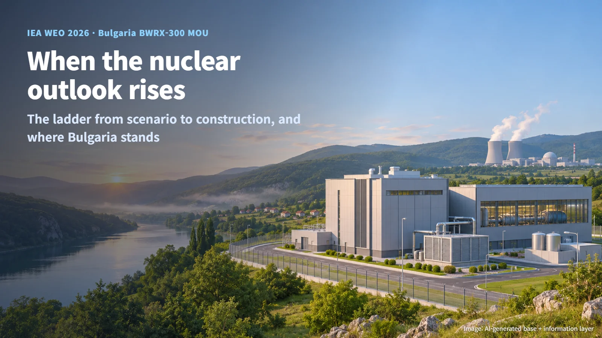
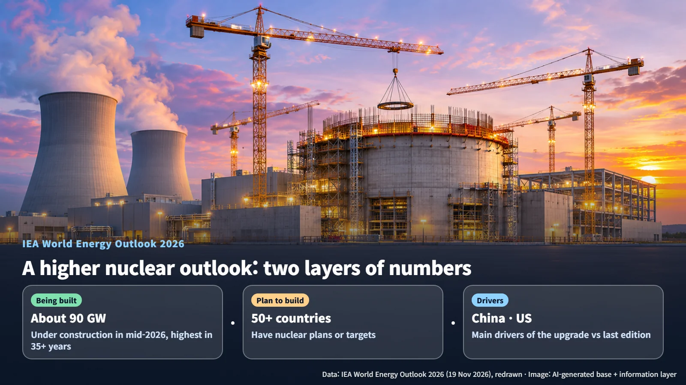

Global outlook · Bulgaria · SMR
When the Nuclear Outlook Rises: The IEA's WEO 2026 and Bulgaria's BWRX-300 MOU on the Path From Scenario to Project
The IEA raised its nuclear outlook led by China and the United States, while Bulgaria's state utility NEK joined a BWRX-300 cooperation MOU. Here is the path from scenario to project.
A headline saying an international agency has raised its nuclear outlook can make it feel as if construction cranes are about to appear everywhere. Add news on the same day of Bulgaria signing a small modular reactor cooperation memorandum, and the impression grows. Both stories point toward more nuclear power, but they sit at different places: one is an outlook sketching the global energy picture, the other an early-stage cooperation agreement preparing a real project in one country. This post sets them side by side to show the steps from outlook to project, and where Bulgaria stands today.

The IEA's Higher Nuclear Outlook: China, the US, 90 GW and 50 Countries
On November 19, the International Energy Agency (IEA) released World Energy Outlook 2026 (WEO). This edition uses several scenarios to analyze how national policy choices will shape energy security, prices and emissions, against the backdrop of the energy supply shock from conflict in the Middle East and the advance of electrification, the shift of heating, transport and other uses onto electricity.
On nuclear, the IEA raised its outlook for nuclear power generation compared with last year's edition, naming China and the United States as the main drivers. It links this to stronger plans in some countries for new construction and long-term operation (running plants beyond their original design life after safety reviews), and to the reconsideration of restrictions on nuclear development, both tied to a preference for domestic energy sources.
The IEA's two headline figures describe two different layers:
- About 90 GW: nuclear capacity already under construction worldwide as of mid-2026, the highest level in more than 35 years. This is work happening on site today.
- More than 50 countries: countries with nuclear plans or targets. These are policy directions; when they turn into construction is set by each country's follow-up decisions.
In short, 90 GW is "what is being built now," and the 50-plus countries are "where governments say they want to build." The thing to watch is how much of the second layer moves into the first.

Scenarios as Conditional Pathways: What Each Path Assumes
The first question about any WEO number is which scenario it belongs to. The IEA presents Current Policies, Stated Policies and Net Zero by 2050 pathways, along with crisis-response cases. In general terms:
- Current Policies assumes only the policies in force today continue, a baseline for "no further decisions."
- Stated Policies (STEPS) also considers specific policy measures that governments have formally put forward but not yet adopted. It does not assume that every announced target will be achieved.
- Net Zero by 2050 starts from net zero emissions in 2050 and works backward to what would be required.
These pathways use different assumptions: policies already in place, specific additional measures formally proposed, and the actions needed to meet a defined net-zero goal. Individual nuclear projects still depend on subsequent government, developer and regulatory decisions.
So an outlook becomes real demand only as each country clears three gates: licensing, financing and supply chain readiness. A project needs regulatory approval, construction funding, and timely delivery of fuel and major components before "nuclear in the outlook" becomes "nuclear under construction." A higher outlook signals that more countries are heading toward those gates.
Bulgaria's BWRX-300 MOU: Three Parties and Four Review Items
The same day, World Nuclear News reported that NEK, Bulgaria's state-owned power company, had signed a memorandum of understanding (MOU) on cooperation to deploy the BWRX-300 with SGE of Poland and Blue Bird Energy of Bulgaria, in the presence of Bulgaria's energy minister. The parties will jointly assess the potential for small modular reactors (SMRs, compact reactors built as factory-made modules and assembled on site). The BWRX-300 is the same design covered in an earlier post on Canada's first SMR project at Darlington.
| Party | Type | Role in the agreement | |---|---|---| | NEK | Bulgarian state-owned power company | Assesses technical, economic and commercial potential and contribution to the national power mix | | SGE | Polish developer | Proposes an approach drawing on multi-unit development experience in Europe | | Blue Bird Energy | Bulgarian company | Includes construction firm Glavbolgarstroy and mining company Asarel-Medet |
(Source: compiled from World Nuclear News, November 19, 2026)
The lineup combines a state utility that can deliver power to the grid, a foreign developer citing multi-unit experience, and domestic companies with construction and industrial capacity, giving the agreement a candidate for each role a nuclear project needs. It is also a step up: last year SGE and Blue Bird Energy signed a letter of intent between themselves, and now the state power company NEK has joined, turning a private expression of interest into a joint review with the public company responsible for the country's electricity supply.
The parties will examine four items: potential sites, financing structure, project delivery model, and the licensing and regulatory framework. A confirmed site, number of units, construction cost and commercial operation date are the items this review is set to determine.
From Outlook to Groundbreaking: Where Things Stand and What Comes Next
The following is an illustrative list of milestones for comparing the two stories. Contracts, licensing and final investment decisions may occur in different orders or in parallel, depending on the project and jurisdiction. This is not a confirmed schedule for Bulgaria.
1. Outlooks and policy targets: the IEA's raised outlook; plans or targets in more than 50 countries 2. Letter of intent: last year's SGE and Blue Bird Energy letter 3. MOU: the NEK, SGE and Blue Bird Energy agreement (Bulgaria's current position) 4. Feasibility, site, financing and regulatory review 5. Reactor purchase contract 6. Construction license 7. Final investment decision 8. Groundbreaking: the stage counted in the IEA's "about 90 GW under construction"
The IEA outlook captures the mood at rung 1; Bulgaria's MOU is a concrete case on rung 3. Its four review items are the to-do list for rung 4: site review starts the path to a construction license, the financing structure and delivery model lay the groundwork for a final investment decision, and the regulatory review maps how the project will climb rung 6. Bulgaria's separate large reactor project at Kozloduy runs on its own track and timeline.
Turning an outlook into operating capacity requires project-specific feasibility, site, financing and regulatory work and decisions. For Bulgaria, the next items to watch are the MOU follow-up scope and timetable, candidate sites, regulatory discussions and financing arrangements.